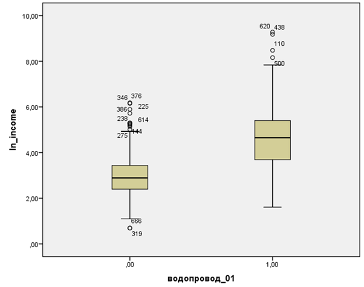
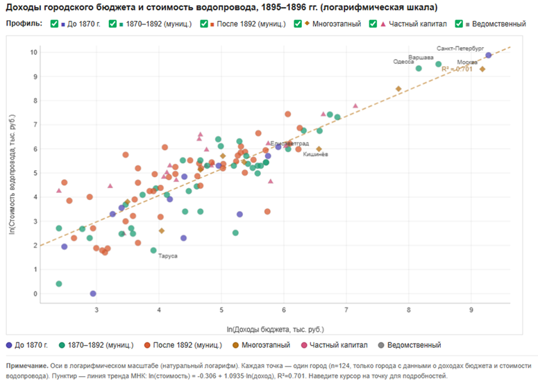

Статистика для историковStatistics for Historians
Как выбрать статистический метод для исторического исследованияHow to Choose a Statistical Method for Historical Research
Без формул, с деревом решений и примерами из истории. За 5 минут вы поймёте, какой метод нужен именно вашей задаче, а освоить их на практике поможет курс «Основы статистики для историков».No formulas - just a decision tree and historical examples. In 5 minutes, you will understand which method your specific task requires, while the "Statistics for Historians: The Basics" course will help you master them in practice.
Для кого статья: историки, аспиранты и гуманитарии, которые собрали данные, но застряли на вопросе «а что здесь вообще считать?».Who this article is for: historians, graduate students, and humanities researchers who have gathered data but are stuck wondering, "What on earth do I actually calculate here?"
Что вы получите: простое правило выбора метода (описать / связь / сравнить / предсказать), таблицу-шпаргалку «задача - метод - когда не подходит» и способ проверить себя.What you will get: a simple rule for choosing a method (describe / relationship / compare / predict), a cheat sheet table ("task - method - when not to use"), and a way to cross-check your work.
Всё начинается с одного вопроса: что вы хотите сделать с данными - описать, найти связь, сравнить группы или прочитать предсказание исхода? Ниже - разбор по шагам, а под ним таблица, которую можно сохранить.It all starts with a single question: what do you want to do with your data - describe it, find a relationship, compare groups, or predict an outcome? Below is a step-by-step breakdown followed by a saveable reference table.
Описать данныеDescribe the Data
Для чисел (доходы, возраст, частота упоминания слов или словосочетаний) - среднее или медиана. Ключевая развилка: в истории данные почти всегда скошены, пара «гигантов» (Петербург, Москва) тянет среднее значение выборки вверх, поэтому честнее медиана. Для категорий - доли и проценты, и всегда указывайте N: «47%» из 32 городов и из 3200 значат разное.For numerical data (income, age, word or phrase frequency) - use the mean or median. The key fork in the road: historical data is almost always skewed, and a couple of "giants" (St. Petersburg, Moscow) pull the sample mean upward, making the median a more honest measure. For categorical data, use proportions and percentages, and always report N: "47%" out of 32 cities means something very different than 47% out of 3,200.

Найти связь двух признаковFind the Relationship Between Two Variables
Две числовые переменные - это корреляция: Пирсон (линейная связь, чувствителен к выбросам (аномальным значениям в выборке)) или Спирмен (ранги, устойчив к выбросам). Перед расчётом посмотрите на диаграмму рассеяния: один выброс или изогнутая связь исказят коэффициент.Two numerical variables call for correlation: Pearson (linear relationship, sensitive to outliers or anomalous values in the sample) or Spearman (ranks, resistant to outliers). Before calculating, look at a scatter plot: a single outlier or a nonlinear (curved) relationship will distort the coefficient.

Одна ловушка на все методы связи: корреляция - это не причинность. Сильная связь доходов и инфраструктуры не доказывает, что одно породило другое: возможен третий фактор (например, административный статус населённого пункта). Метод показывает, что признаки движутся вместе; почему - вы устанавливаете по источникам.One trap common to all association methods: correlation is not causation. A strong link between income and infrastructure does not prove that one caused the other - a third factor could be at play (e.g., the administrative status of a settlement). The method shows that the variables move together; why they do is something you determine from your sources.
Сравнить группыCompare Groups
Для малых и асимметричных исторических данных подходят непараметрические критерии (работают с рангами):For small and asymmetric historical data, nonparametric tests (which work with ranks) are appropriate:
- Две независимые группы (города с водопроводом и без) › критерий Манна-Уитни.
- Две связанные точки (один город в 1894 и 1910) › критерий Уилкоксона.
- Три группы и больше (города по регионам) › критерий Краскела-Уоллиса.
- Две категории (регион и наличие инфраструктуры) › критерий хи-квадрат (при малых ячейках - точный тест Фишера).
- Two independent groups (cities with and without a water supply) › Mann-Whitney test.
- Two paired points (the same city in 1894 and 1910) › Wilcoxon test.
- Three or more groups (cities broken down by region) › Kruskal-Wallis test.
- Two categories (region and presence of infrastructure) › Chi-square test (or Fisher's exact test if cell counts are small).
Прочитать предсказание бинарного исходаPredict a Binary Outcome
Если исход «да/нет» (построен водопровод или нет) и вы хотите понять, какие факторы с ним системно связаны, - это логистическая регрессия. Её показатель Exp(B) - множитель шансов, а не вероятности (путать эти два - типичная ошибка, за которую отклоняют статьи).If the outcome is "yes/no" (whether a water supply was built or not) and you want to understand which factors are systematically associated with it, you need logistic regression. Its coefficient, Exp(B), represents the odds ratio, not probability (confusing the two is a classic mistake that leads to manuscript rejection).
ШпаргалкаCheat Sheet
Задача › метод › когда не подходитTask › Method › When NOT to Use
| Ваша задача | Метод | Когда НЕ подходит |
|---|---|---|
| Описать одно число | Медиана / среднее + распределение | - |
| Описать категорию | Доли и проценты (с N) | Круговая диаграмма при множественном признаке |
| Связь: число x число | Корреляция Пирсона или Спирмена | Связь нелинейна - r обманет |
| Связь: категория x категория | Критерий хи-квадрат (+ Крамер) | Ожидаемые частоты меньше 5 - тест Фишера |
| Сравнить 2 независимые группы | Критерий Манна-Уитни | - |
| Сравнить «до / после» | Критерий Уилкоксона | Совсем малые выборки (меньше ~6 пар) |
| Сравнить 3 группы и больше | Критерий Краскела-Уоллиса | - |
| Предсказать исход «да/нет» | Логистическая регрессия | Очень мало данных или редкие события |
| Your Task | Method | When NOT to Use |
|---|---|---|
| Describe a single number | Median / mean + distribution | - |
| Describe a category | Proportions and percentages (with N) | Pie chart for multiple attributes |
| Relationship: number x number | Pearson or Spearman correlation | Relationship is nonlinear - r will be misleading |
| Relationship: category x category | Chi-square test (+ Cramer's V) | Expected frequencies less than 5 - use Fisher's exact test |
| Compare 2 independent groups | Mann-Whitney test | - |
| Compare "before / after" | Wilcoxon test | Very small samples (fewer than ~6 pairs) |
| Compare 3 or more groups | Kruskal-Wallis test | - |
| Predict a "yes/no" outcome | Logistic regression | Very little data or rare events |
Мини-кейсMini-Case Study
От наблюдения к аргументуFrom Observation to Argument
Задача: различались ли города с водопроводом и без него по уровню доходов городского бюджета?Task: did cities with and without a water supply differ in their municipal budget revenues?
Метод: критерий Манна-Уитни (две группы, малые асимметричные данные).Method: Mann-Whitney test (two groups, small asymmetric data).
На выходе: медианы двух групп, p-value и готовый результат - «города с водопроводом имели значимо более высокий медианный доход (U = …, p меньше 0,001)».Output: medians of both groups, a p-value, and a ready-to-use result - "cities with a water supply had a significantly higher median income (U = …, p < 0.001)".
Так за один тест наблюдение превращается в проверяемый научный аргумент.Just like that, a simple observation turns into a verifiable scientific argument.
СамопроверкаSelf-Check
Как понять, что метод выбран верноHow to Know If You've Chosen the Right Method
- Тип переменных совпал с методом: число / категория / да-нет.
- Для малых выборок - осторожные формулировки, без «громких» выводов.
- Рядом с p-value есть размер эффекта (одного p недостаточно).
- Вывод описывает то, что метод реально измерил: медианы, доли или шансы, - а не «среднее», если вы считали медиану.
- The variable type matches the method: numerical / categorical / yes-no.
- For small samples, use cautious phrasing without sweeping conclusions.
- Include the effect size alongside the p-value (p alone is not enough).
- Your conclusion describes what the method actually measured (medians, proportions, or odds) rather than the "mean" if you calculated the median.
Выбор метода - это половина делаChoosing a Method is Half the Battle
Дальше идёт практика: подготовить данные, посчитать в бесплатной jamovi и корректно описать результат. После курса вы сможете выбрать метод под свою задачу, посчитать его, честно описать и вставить готовый фрагмент в методологический раздел статьи или заявки - на своих или учебных данных.Next comes the practical part: preparing the data, running the calculations in the free software jamovi, and correctly describing the results. After the course, you will be able to choose the right method for your task, run it, describe it honestly, and insert the finished snippet into the methodology section of an article or grant proposal - using either your own data or practice datasets.
Открыть курс «Основы статистики для историков» ›Open the "Statistics for Historians: The Basics" course ›Пошаговая работа со всеми методами и учебным датасетом - в курсе (сейчас со скидкой к началу учебного года).Step-by-step guidance on all methods using a training dataset is included in the course (currently on sale for the start of the academic year).